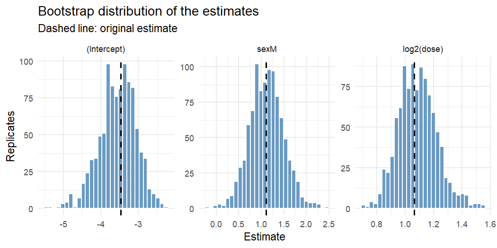
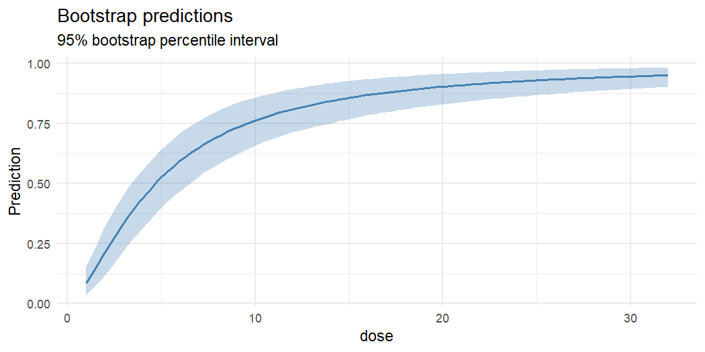

parametricboot automates the parametric bootstrap for fitted regression models. You fit a model as usual; the package simulates new responses from it, refits the model to each of them, and turns the replicates into bias estimates, standard errors, confidence intervals, prediction intervals, likelihood-ratio tests and diagnostic plots.
Supported models:
| Model | Fitted with | How replicates are generated |
|---|---|---|
| Linear and generalised linear models |
lm(), glm()
|
simulate(), then the original call is re-evaluated |
| Linear and generalised linear mixed models |
lme4::lmer(), lme4::glmer()
|
simulate(), then lme4::refit()
|
| Cox proportional hazards models | survival::coxph() |
model-based resampling (Davison & Hinkley, 1997, Algorithm 7.3) |
Installation
parametricboot is a work in progress: it is not on CRAN, and the interface may still change. Install the development version from GitHub:
# install.packages("pak")
pak::pak("DiogoRibeiro7/parametricboot")Example
A classic dose-response experiment (Collett, 1991): batches of 20 tobacco budworm moths of each sex were exposed to six doses of a pyrethroid, and the number killed was recorded. That is only 12 binomial observations, so how far can the large-sample theory behind summary(fit) be trusted?
library(parametricboot)
budworm <- data.frame(
sex = rep(c("M", "F"), each = 6),
dose = rep(c(1, 2, 4, 8, 16, 32), times = 2),
dead = c(1, 4, 9, 13, 18, 20, 0, 2, 6, 10, 12, 16),
n = 20
)
fit <- glm(cbind(dead, n - dead) ~ sex + log2(dose), data = budworm, family = binomial())
res <- pb_simulate(fit, n = 1000, seed = 2025)
res
#> <pb_boot> Parametric bootstrap
#> Model: glm (binomial)
#> Replicates: 1000
#> Terms: (Intercept), sexM, log2(dose)pb_summary_table() reports, for each coefficient, the bootstrap estimates of bias, standard error and mean squared error, the actual coverage of the nominal 95% Wald interval, and a bootstrap confidence interval:
pb_summary_table(res)
#> term estimate boot_mean bias std_error mse coverage
#> 1 (Intercept) -3.473155 -3.552493 -0.07933778 0.4839494 0.24026729 0.954
#> 2 sexM 1.100743 1.117377 0.01663401 0.3784177 0.14333343 0.945
#> 3 log2(dose) 1.064214 1.088388 0.02417447 0.1352250 0.01885192 0.946
#> lower upper
#> 1 -4.5809602 -2.702189
#> 2 0.4015961 1.856280
#> 3 0.8444751 1.401441Here the news is good: the slope is overestimated by about 2%, a small fraction of its standard error, and the Wald intervals cover as advertised. The bootstrap distributions are close to normal:
pb_plot_estimates(res)
The same replicates give intervals for any prediction, here the dose-response curve for male moths:
males <- data.frame(sex = "M", dose = seq(1, 32, length.out = 100))
pb_plot_predictions(res, males, x = "dose", type = "response")
Functions
| Task | Functions |
|---|---|
| Draw replicates |
pb_simulate(), pb_parallel(), pb_drop_warned()
|
| Summarise |
pb_summary_table(), pb_key_stats(), pb_confint(), pb_tidy(), plus print(), summary() and confint() methods |
| Visualise |
pb_plot_estimates(), pb_plot_diagnostics(), pb_plot_predictions()
|
| Predict | pb_predict_boot() |
| Test nested models |
pb_lrt(), pb_plot_lrt()
|
| Compare other models | pb_compare_models() |
| Nonparametric helper | pb_resample() |
The getting-started article (vignette("parametricboot")) is a tour that also covers mixed models, Cox models, bootstrap likelihood-ratio tests, and what to do when some refits misbehave. The full function reference is on the package website.
Getting help and contributing
Please report bugs and request features on the issue tracker. Contributions are welcome; see the contributing guide. This project follows a code of conduct.
License
MIT © Diogo Ribeiro. See LICENSE.md.